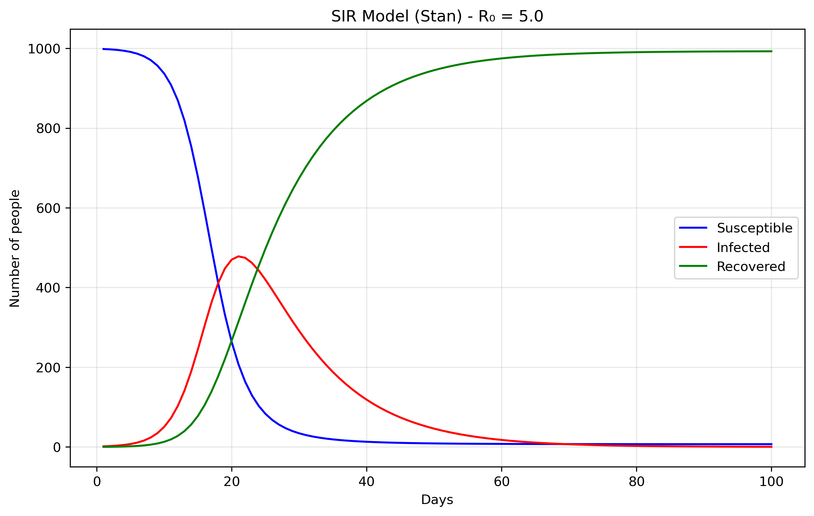
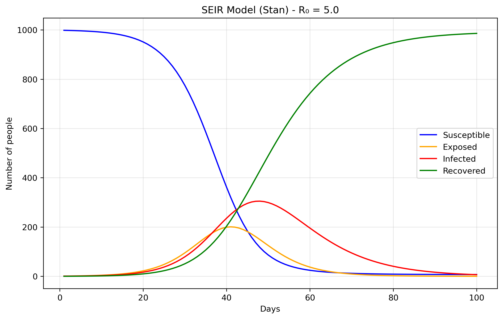
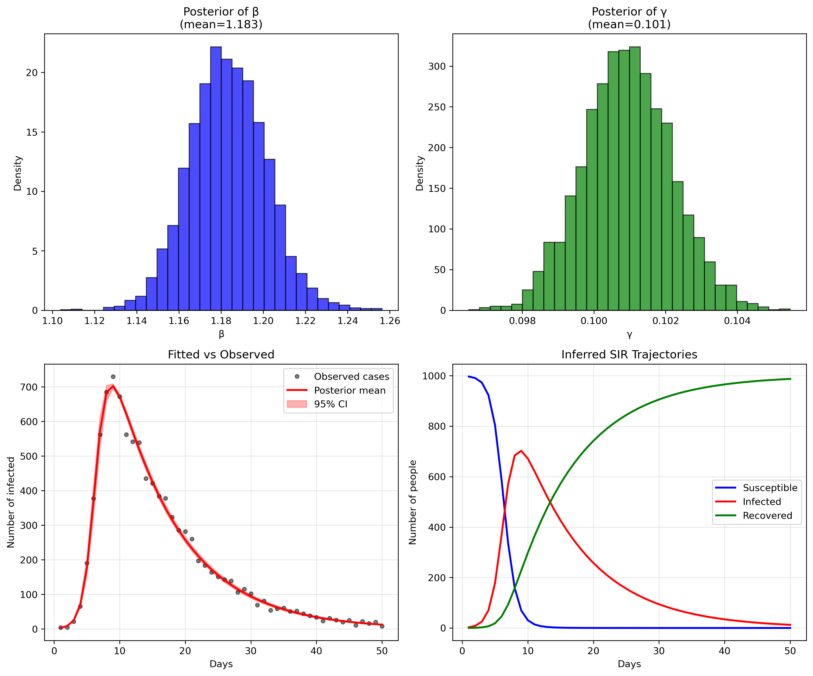

Started: 2025-06-13 12:57:40 -0400, Published: XXXX
Last edited: 2025-07-05 06:22:56 -0400
integrate_ode_rk45 to ode_rk45), so I’ve
reconstructed the model here. Hopefully, this will be useful to
others facing similar issues.
Files are: [sir0.stan]: the model, [sir0.py]: the runtime.
SIR models divide a population into three compartments: S - Susceptible → I - Infected → R - Recovered. S: People who can catch the disease, I: People currently infected and contagious and R: People who have recovered (or died!) and are immune. The parameters of these models aredS/dt = -beta × S × I / N dI/dt = beta × S × I / N - gamma × I dR/dt = gamma × Iwhich in turn can be straightforwardly encoded in Stan as:

functions { vector sir(real t, vector y, real beta, real gamma) {
real S = y[1];
real I = y[2];
real R = y[3];
real N = S + I + R;
vector[3] dydt;
dydt[1] = -beta * S * I / N; // dS/dt
dydt[2] = beta * S * I / N - gamma * I; // dI/dt
dydt[3] = gamma * I; // dR/dt
return dydt;
}
}
The most important part now is simply generating the quantities.
generated quantities {
array[n_days] vector[3] y = ode_rk45(sir, y0, t0, ts, beta, gamma);
}
You will see in [sir0.stan] that there's an
empy model{...} block. In Stan, the model block is where
you typically specify your likelihood and priors for Bayesian
inference. However, in this case, we're not doing any parameter
estimation. We'll come back to this below
The data come from the Python file [sir0.py].
N = 1000 # Total population size.
data = {
'n_days': 100, # How long to run the simulation (100 days)
't0': 0, # Starting time (day 0)
'y0': [N-1, 1, 0], # Initial conditions: [999, 1, 0]
'beta': 0.5, # Transmission rate
'gamma': 0.1 # Recovery rate
}
The initial conditions y0: [N-1, 1, 0] set up the
epidemic starting point. S0 = 999 means almost
everyone in the population starts susceptible to the
disease. I0 = 1 indicates there is one initially
infected person, often called "patient zero," who will start the
outbreak. R0 = 0 shows that nobody has recovered yet
at the beginning. The model's parameters control how the disease
spreads: beta = 0.5 represents the transmission rate,
meaning an infected person has an average of 0.5 disease-transmitting
contacts per day with each susceptible person (when scaled by the
total population). gamma = 0.1 is the recovery rate,
indicating that each infected person has a 10% chance of recovering
each day, which translates to an average infectious period of 1/gamma = 10
days.
Files are [seir0.stan] and [seir0.py].
The Exposed (E) compartment represents individuals who have been infected but are not yet infectious themselves. When a susceptible person contracts the disease, they first enter the E state where the pathogen is incubating - multiplying within their body but not yet at levels sufficient to transmit to others. After an average incubation period of 1/σ days, they transition to the Infectious (I) state where they can spread the disease. This is more realistic than the SIR model's assumption that people become immediately infectious upon infection, and is particularly important for diseases like COVID-19, influenza, or measles where there's a significant latent period between infection and infectiousness. The E compartment is easy to add. First we modify the equations, in Stan it would translate to:
dydt[1] = -beta * S * I / N; // dS/dt dydt[2] = beta * S * I / N - sigma * E; // dE/dt dydt[3] = sigma * E - gamma * I; // dI/dt dydt[4] = gamma * I; // dR/dtWe just added the sigma parameter (ie., rate of progression from E to I).
The above is essentially using Stan as a differential equation solver rather than a probabilistic programming language. Remember the "forward simulation" we were talking about above? So that means that we're taking the SIR differential equations and solving them forward in time from a starting point, without trying to fit the model to any data or estimate unknown parameters. In the forward case, we're asking: "Given these parameters, what happens?". In the inverse case, we'd ask: "Given what happened (data), what were the parameters?" Or, a bit closer to our examples here: from "Given beta and gamma, what epidemic do we get?", to "Given observed cases, what beta and gamma most likely produced them?".
Now we'll demonstrate Bayesian inference using Markov Chain Monte Carlo (MCMC) methods applied to the classic SIR epidemiological model. To make this exercise concrete, we'll work with synthetic epidemic data representing fictional disease outbreaks, each with its own unique transmission characteristics and backstory. The complete code for generating these synthetic datasets can be found here. If you don't want to read the explanation of the file, you can find the python script in [sir_synthetic_data.py]. But I like the backstories, in particular the Silver Drift.
We'll only deal with the simplest case, Nexus fever: A mysterious respiratory illness first discovered in a research facility studying quantum particles, Nexus Fever spreads through airborne droplets and causes severe fatigue and cognitive fog. The disease emerged when a containment breach allowed experimental nanomaterials to interact with common cold viruses, creating an entirely new pathogen (LOL).
The objective is to fit the cases brought about by these diseases. That is, fitting beta and gamma without knowing them a priori. We know them, but the model doesn't, and it should be able to recover them. You can find the model specification in [sir_infer.stan], and we'll try to recover the data generated by our script, where the most important part is the following:
def generate_sir_synthetic_data(
N=1000,
beta=0.8, # <-- this matters
gamma=0.1, # <-- this matters
I0=1,
n_days=50,
observation_noise='poisson',
noise_scale=1.0,
seed=42
...
where beta=.8 and gamma=.1 is what we
will try to recover. To do this, the two most important points of the
model specification is now in the model {...} part of the
Stan code. In Bayesian statistics, they are called the priors, what we
expect the data to be (given our previous knowledge) before actually
seeing the data. In a way, it will guide the model to find the correct
parameter values without having to explore an infinite value
space.
In our model, the priors are:
beta ~ lognormal(-0.69, 0.5); gamma ~ lognormal(-2.30, 0.5); phi ~ exponential(0.1);These prior choices are weakly informative, they don't constrain the search too much, and grounded in epidemiological knowledge. The beta prior
lognormal(-0.69, 0.5)
centers around 0.5 per day with a 95% credible interval of roughly
[0.2, 1.2], covering realistic transmission rates from slow-spreading
diseases with interventions to highly transmissible infections like
early COVID-19, while the lognormal distribution ensures positivity
and allows for right-skewed behavior typical of transmission
parameters. The gamma prior lognormal(-2.30, 0.5)
centers around 0.1 per day (corresponding to a 10-day infectious
period) with a range covering 4-25 day infectious periods, which
encompasses most respiratory infections from fast-recovering common
colds to slower bacterial infections. The phi prior has a mean
of 10 and mode at 0, weakly favoring less overdispersion while
allowing the long tail to accommodate high overdispersion when the
data demands it, with small phi values indicating noisy data and large
phi values approaching Poisson-like behavior. Together, these priors
encode basic biological constraints (positivity), rule out completely
unrealistic scenarios (like beta = 100 or 1-day infectious periods),
provide gentle regularization when data is sparse, and allow the data
to dominate inference while implying reasonable R0 values (mean ≈ 5)
that align with epidemiological expectations for infectious disease
modeling.
Finally, the likelihood is cases ~ neg_binomial_2(y[,2],
phi);, because real epidemiological data almost always exhibits
overdispersion, the variance is much larger than the mean, due
to reporting inconsistencies, testing variability, behavioral
heterogeneity, spatial clustering, and measurement error that our
simple SIR model doesn't capture. A Poisson likelihood would assume
variance equals the mean, which is unrealistic for disease
surveillance data. The negative binomial distribution naturally
extends Poisson to handle overdispersion with mean E[cases] =
y[,2] (the infected count from our SIR model) and variance
Var[cases] = mu + mu²/phi, where phi controls the
overdispersion; ie, large phi behaves like Poisson while small phi
allows high overdispersion. This likelihood essentially says "the
observed cases are drawn from a distribution centered at our model's
predicted infected count, but with additional variance controlled by
phi to account for all the real-world noise our ODE doesn't capture."
This approach is empirically supported since count data in
epidemiology is almost always overdispersed, provides a flexible
variance structure that's robust to model misspecification, remains
computationally efficient, and gives interpretable parameters where φ
directly measures how much extra variability exists beyond what a
perfect model would predict, making our inferences more robust and
realistic by acknowledging that our SIR model is a simplified
approximation of reality.
So, does our model fit the generated data? Let's look at some plots generated by running the python script in [sir_infer.py]:

or, in numbers:
Mean MCSE StdDev MAD 5% 50% 95% ESS_bulk ESS_tail R_hat
lp__ -203.91800 0.033031 1.318160 1.008910 -206.610000 -203.558000 -202.536000 1777.15 2417.88 1.000900
beta 1.18326 0.000359 0.018217 0.018110 1.154140 1.182970 1.212580 2742.12 2336.94 1.000860
gamma 0.10094 0.000022 0.001239 0.001233 0.098874 0.100934 0.102961 3098.30 2665.67 1.000610
phi 91.22360 0.433643 25.389000 23.988400 54.080300 88.724000 137.356000 3350.32 2747.04 1.000350
...
[205 rows x 10 columns]
The parameter recovery is remarkably precise (in this toy example, reality is not like that, unfortunately). For beta (transmission rate), our posterior mean of 1.183 is extremely close to the true value of 1.2 we used to generate the data, representing only a 1.4% difference. The 95% credible interval [1.154, 1.213] captures the true value with high confidence, and the narrow standard deviation of 0.018 indicates excellent precision.
Similarly, gamma (recovery rate) shows outstanding recovery with a posterior mean of 0.101 versus the true value of 0.1 - a 1% difference. The extremely tight 95% credible interval [0.099, 0.103] and minuscule standard deviation of 0.001 demonstrate the model's ability to precisely estimate this parameter from the observed case counts alone. This translates to a basic reproduction number R0 = beta/gamma = 1.183/0.101 = 11.7, which closely matches the true R0 = 1.2/0.1 = 12 used in data generation (only 2.5% difference).
The model diagnostics are also excellent: all R-hat values are very close to 1.0 (indicating convergence), and the effective sample sizes (ESS) are well above 1000, confirming reliable posterior estimates. The fit between observed and predicted cases (bottom left panel) shows the model capturing the epidemic curve's shape and magnitude with high fidelity, while the inferred SIR trajectories (bottom right) recreate the full epidemic dynamics that were never directly observed, demonstrating the power of mechanistic modeling to recover underlying epidemiological processes from limited surveillance data.
RData files and transform them into csv
files.
This post also appears on Substack.
Thanks to Nicolò Gozzi, Bruno Gonçalves, Nicola Perra and Kyriaki Kalimeri for reviewing this post.
Index